The brief: a store that doesn’t sell
CeraVe is one of the best-known skincare brands in the US, but you can’t check out on cerave.com. Every “Buy” sends you to Amazon, Target, Walmart or another retailer. That makes the website a decision tool: it earns its keep only if shoppers leave it knowing what to buy and where.
An earlier heuristic evaluation and cognitive walkthrough had flagged problems with product discovery, the skincare quiz and comparison. Our team ran a usability test to see how easily people could get through real shopping tasks, and how they felt doing it.
Find a product that fits their skin, understand how it differs from the alternatives, and know the price before they leave.
Hand every visitor to a retailer with confidence, so the visit ends in a purchase and in trust in the brand.
The shopping trip we tested
Five women aged 19 to 39 who buy skincare took part in 30-minute remote sessions on Microsoft Teams. Each worked through three tasks while thinking aloud, rated each one on the After-Scenario Questionnaire, and finished with the System Usability Scale.
| Task | Finished on their own | Ease, average rating |
|---|---|---|
| Find where to buy Daily Moisturizing Lotion online | 2 of 5 | 3.0 of 5 |
| Build a routine with the Skincare Solution Finder | 1 of 5 | 2.6 of 5 |
| Compare the Hydrating and Foaming Facial Cleansers | 0 of 5 | 3.6 of 5 |
Comparing scored highest on ease even though no one finished it alone. We think participants were rating it against the two harder tasks before it.
System Usability Scale, out of 100
Where confidence dropped
Getting to a product was never the problem: everyone found it through the menu or search. Confidence fell at the moments a shopper had to decide something, and it fell at a different step in each task.
Buy · find where to buy
- Went wellFind the product
Everyone got there, through the menu or search.
- Stalled or gave upPick a retailer
A list of logos with no prices, sizes or stock. Three weren’t sure which to pick.
- Stalled or gave upLeave for checkout
Every participant was unsure about being sent to another site.
Choose · build a routine
- HesitatedFind the quiz
Most looked for their concern in the menus instead.
- HesitatedAnswer it
Those who started got through the questions.
- Stalled or gave upTrust the results
Generic picks, no reasons. Puffy eyes returned no eye cream.
Compare · two cleansers
- Went wellOpen a cleanser
Finding each product was easy.
- Stalled or gave upFind Compare
Four of five never saw the button at the top of the page.
- Stalled or gave upUse the chart
A fixed chart. No one could pick what was in it.
Each step summarises what participants said and did in the sessions. It isn’t a measured score.
What shoppers expected, and what they got
Each drop came from a mismatch between how participants already shop online and how the site asked them to shop.
Buy
Where should I buy this, and for how much?
To compare retailers on price, size and deals before choosing one, as they would in a shopping app.
Six logos and six identical Buy buttons. The price only appeared on the retailer’s own site.
“I didn’t realize that I’m on some other website.” Participant 2
Choose
Which of these is right for me?
To start from their concern, like dryness or dark circles, and see options to weigh up.
A quiz that started from skin type and returned one product per step, with no reason for any of them.
“By concern I don’t see anything for dark circles or puffiness.” Participant 3
Compare
How are these two different?
To tick the products they cared about and see them side by side. One called it a “checkbox situation”.
One small button at the top of the page, leading to a fixed chart of products they hadn’t chosen.
“It’s like read through every single thing.” Participant 2
The redesign, in shopping order
The redesign keeps CeraVe’s look and follows a shopper through the site: choose, then compare, then buy. Each chapter starts with the original screen. On the redesigned screens, hover or focus a numbered note to highlight it.
Choose
Start from the concern, and explain every pick
Concerns now sit in the main menu and lead into a shorter finder. Its results say why each product is there and let shoppers swap or compare it.
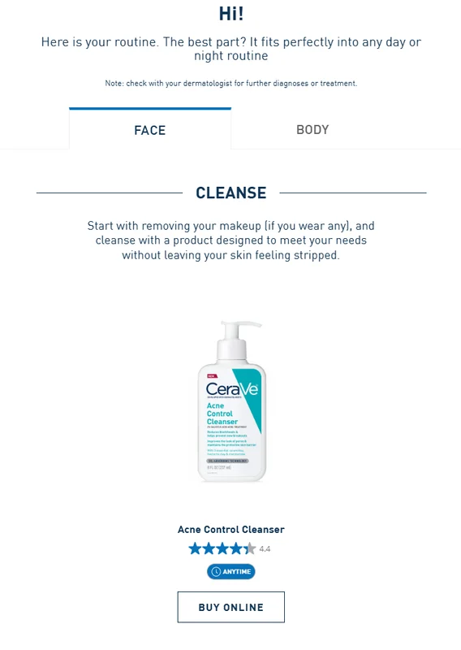
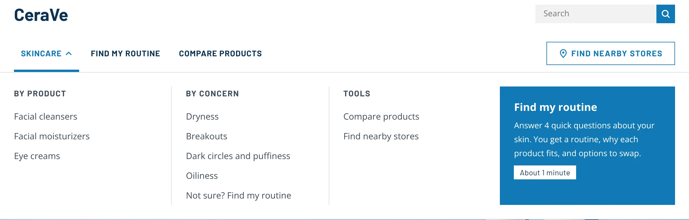
Concerns sit in the Skincare menu and open the finder with that concern already chosen.
- 1Concerns lead straight into the finderChoose
- 2Says what the finder does and how long it takesChoose
- 3"Find my routine" in the main menuChoose
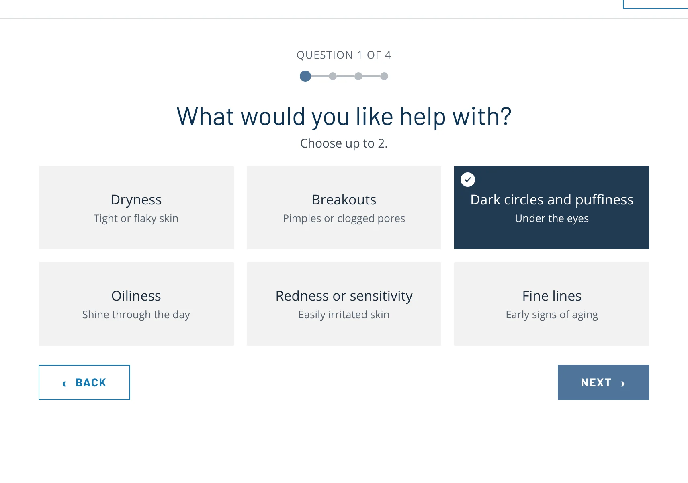
Four short questions. “Dark circles and puffiness” is a concern you can pick.
- 14 questions, with progress you can seeChoose
- 2"Dark circles and puffiness" is now a concernChoose
- 3Up to two concerns, in everyday wordsChoose
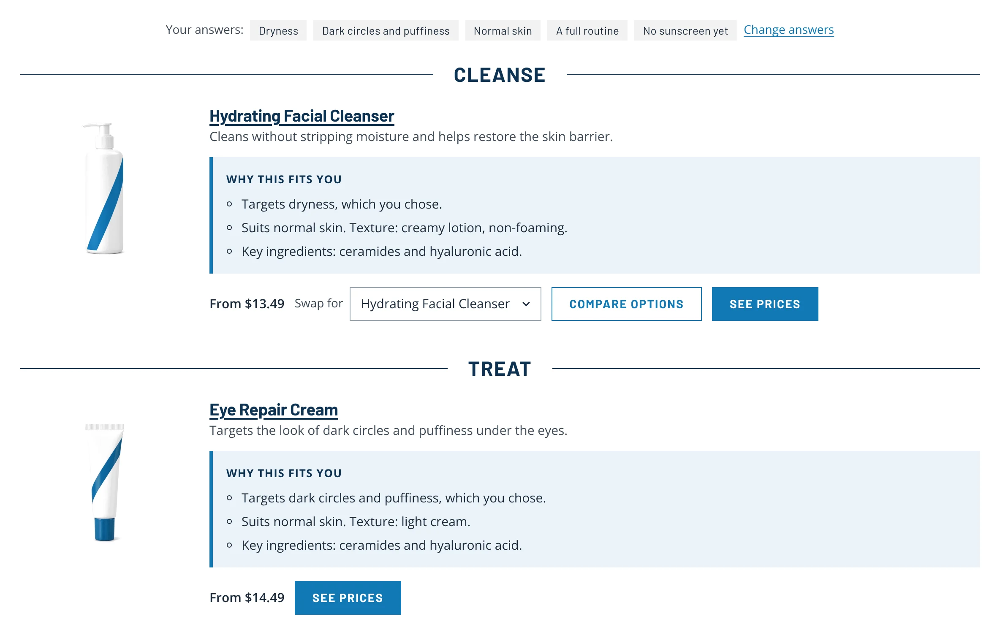
Results keep your answers on screen, explain every product, and let you swap or compare it. Puffy eyes now return an eye cream.
- 1Your answers stay visible and editableChoose
- 2"Why this fits you", tied to each answerChoose
- 3Swap any product for an alternativeChoose
- 4Compare the options for that stepCompare
- 5Puffy eyes now return an eye creamChoose
Compare
Pick what to compare, then compare it
Compare now works the way participants expected: choose products as you browse, then see them side by side.
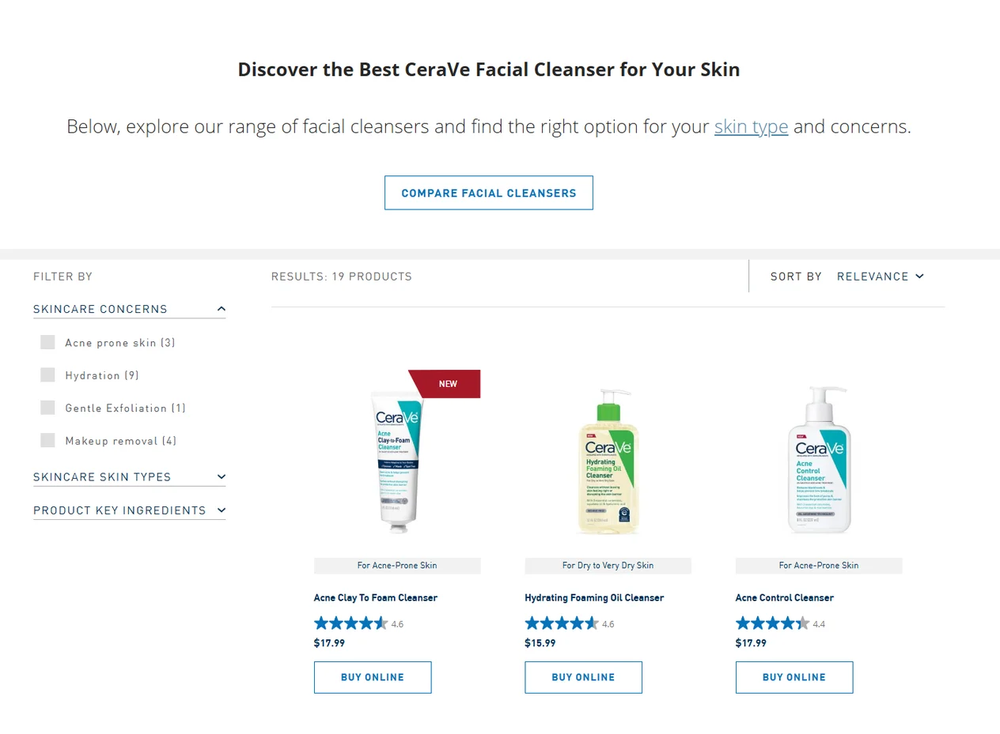
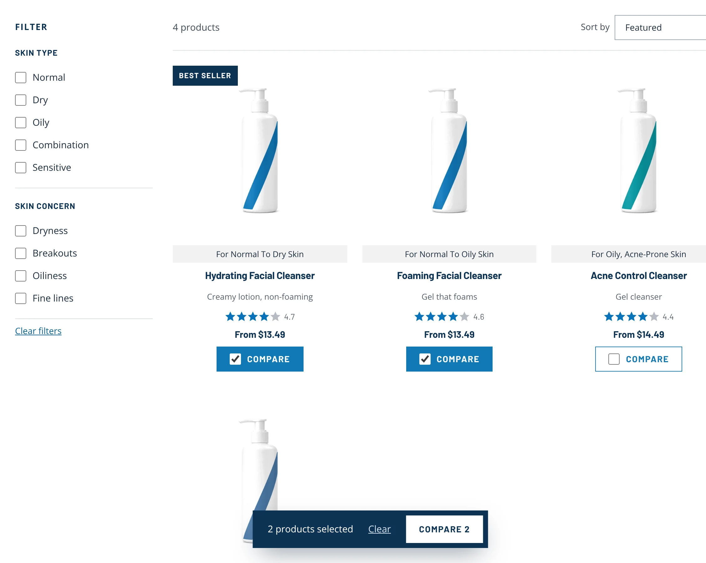
Tick Compare on any product. A tray keeps count and opens the table.
- 1A Compare checkbox on every productCompare
- 2A tray counts your picks and opens the tableCompare
- 3Filter by skin type and concernChoose
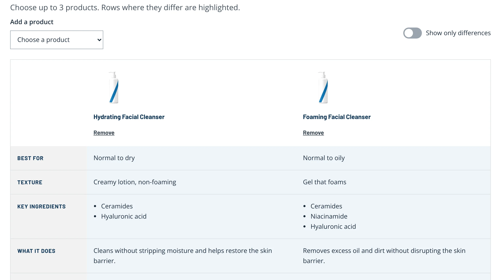
You choose what’s in the table, and it highlights what’s different.
- 1Add a third product of your choiceCompare
- 2Hide the rows that are the sameCompare
- 3Differences highlightedCompare
- 4Remove any productCompare
Buy
Show the price before shoppers leave
Shoppers choose a retailer by price and discount first, so the product page and the retailer list now lead with both, and say plainly where checkout happens.
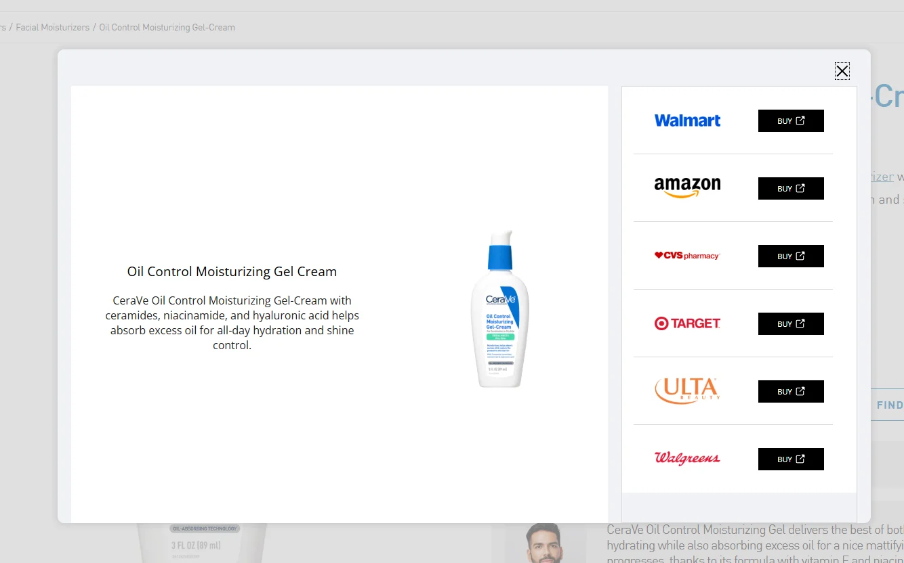
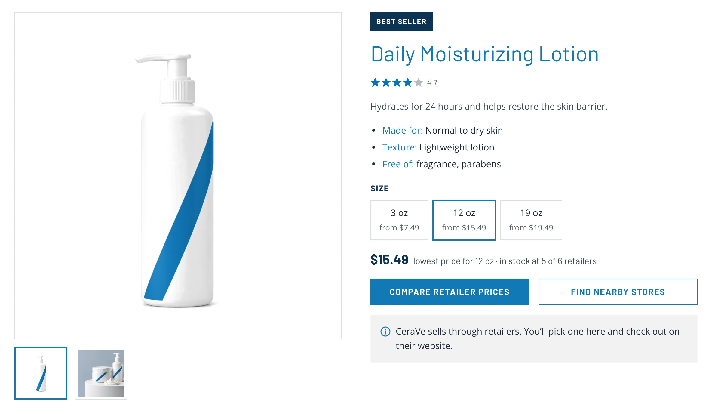
The product page shows the lowest price for the size you pick, and says plainly that you’ll check out with a retailer.
- 1Every size shows its lowest priceBuy
- 2Price and stock up front, before you leaveBuy
- 3"Compare retailer prices", not a vague "Buy online"Buy
- 4"Where to Buy" renamed "Find nearby stores"Buy
- 5Says plainly that checkout happens at the retailerBuy
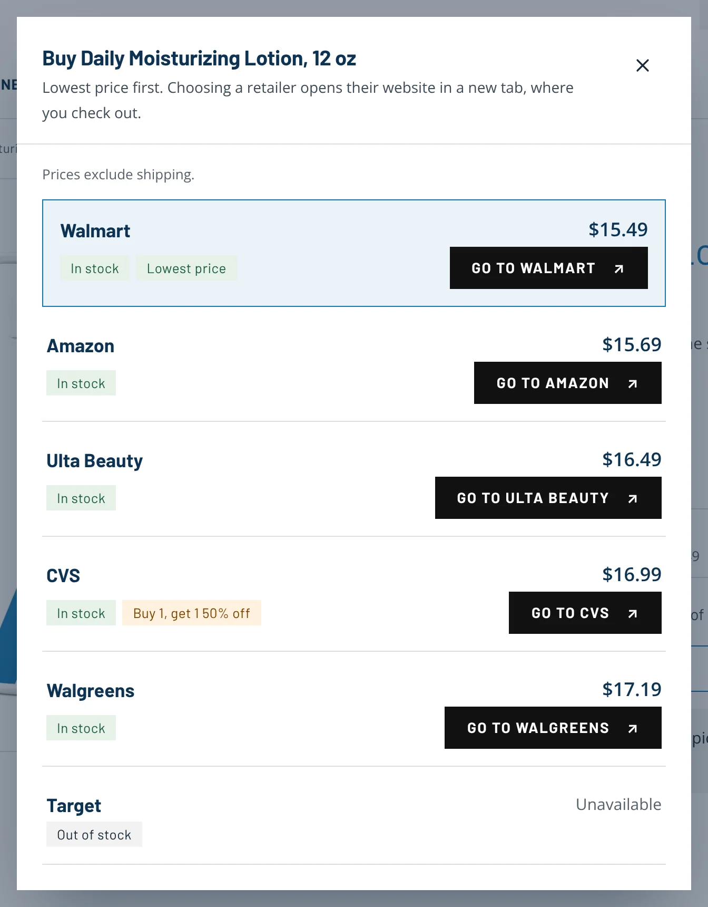
The retailer list is sorted by price, shows stock and coupons, and every button says where it goes.
- 1Sorted by price, with the lowest labelledBuy
- 2Coupons shown before you chooseBuy
- 3Names the retailer and says it opens their siteBuy
- 4Out-of-stock retailers stay visible, but lastBuy
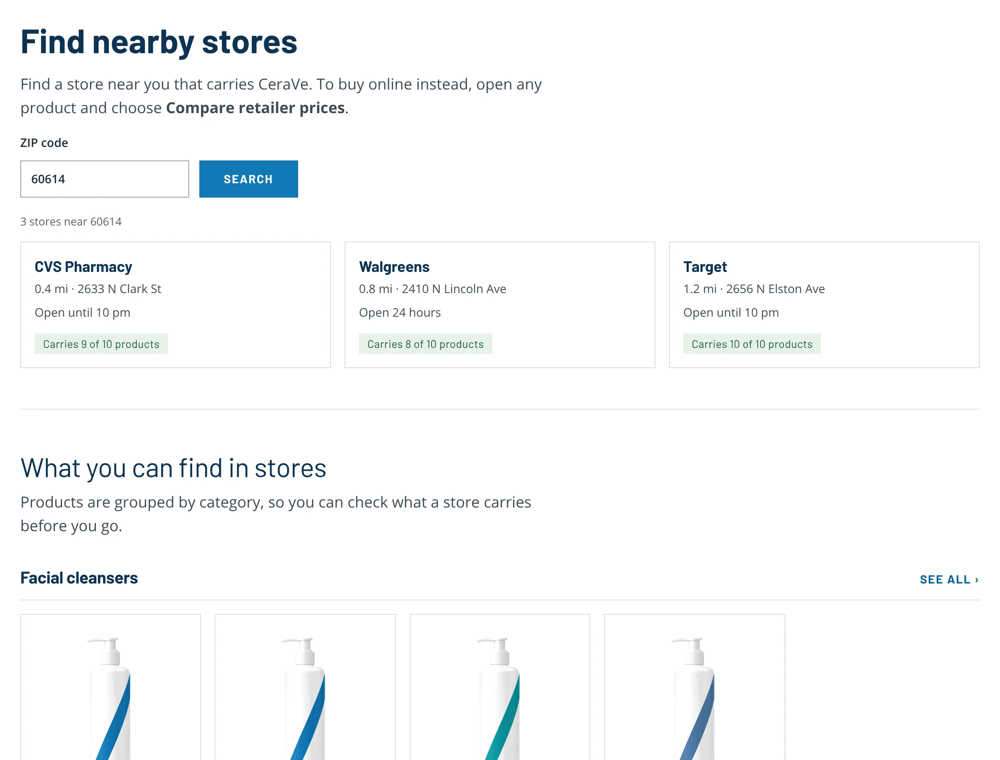
“Find nearby stores” now means stores, and groups products by category so the page doesn’t overwhelm.
- 1The page says what it is: stores, not online retailersBuy
- 2Each store shows distance, hours and what it carriesBuy
- 3Products grouped by category, not one long listBuy
From recommendation to build
After the sessions our team wrote 12 recommendations and rated each from 1 (low) to 5 (high) for severity. In the redesign I built every one of them, in CeraVe’s existing visual style, so the change is in how the site works rather than how it looks.
| # | Severity | What we recommended | What I built |
|---|---|---|---|
| 1 | 5 of 5 | Show current prices for each online retailer, so shoppers don’t click back and forth between sites. | Prices for every retailer, sorted lowest first |
| 2 | 4 of 5 | Show which sizes each retailer sells. | Every size shows its own lowest price |
| 3 | 3 of 5 | Show which retailers have coupons, since shoppers choose by price and discount first. | Coupon tags on the retailer list |
| 4 | 4 of 5 | Rename “Where to Buy” to “Find nearby stores” so it isn’t confused with buying online. | “Find nearby stores” for stores, “Compare retailer prices” for online |
| 5 | 3 of 5 | List products under categories on the Where to Buy page. | The stores page groups products by category |
| 6 | 4 of 5 | Label the quiz clearly so shoppers know what results to expect. | The finder says what it does and that it takes about a minute |
| 7 | 4 of 5 | Put the quiz under Skincare, by concern, to match shoppers’ goals. | Concerns in the Skincare menu open the finder |
| 8 | 4 of 5 | Let shoppers see and swap in other products in their results. | A Swap menu and Compare options on every step |
| 9 | 5 of 5 | Explain why each recommended product suits the shopper. | “Why this fits you” on every pick, tied to their answers |
| 10 | 5 of 5 | Make the Compare button far more visible. | A Compare checkbox on every product card, with a tray |
| 11 | 5 of 5 | Make the comparison chart interactive, so shoppers choose what to compare. | A table you build: add, remove, show only differences |
| 12 | 3 of 5 | Make the sticky secondary menu clearly look like navigation. | A navy “On this page” bar with clear labels |
I added one change of my own: “Dark circles and puffiness” as a concern in the finder, after the participant who asked for help with puffy eyes got no eye cream.
How we’ll know it worked
The prototype is built and a scripted run completes all three tasks, but it hasn’t been tested with shoppers yet. The plan is to repeat the same three tasks with five new participants and measure against this study’s results. The targets are mine.
| Measure | This study | Target |
|---|---|---|
| Find where to buy, on their own | 2 of 5 | 4 of 5 |
| Build a routine with the finder, on their own | 1 of 5 | 4 of 5 |
| Compare two cleansers, on their own | 0 of 5 | 4 of 5 |
| Ease rating for each task | 2.6 to 3.6 of 5 | 4 of 5 or higher |
| System Usability Scale | 54.1 | Above the 68 average |
Live prices depend on data from each retailer. Before building this for real, I’d check with engineering and retail partners which retailers can share price and stock, and how often it updates.
Limitations
- Five participants, all women, tested remotely on a laptop or desktop.
- One participant’s first task was excluded after a test error.
- The prototype uses sample prices and stock, and generated product photos.